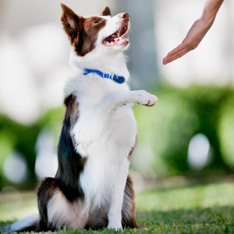

AGE: 2
BREED: Pug
PURPOSE: To be there for you for comfort and to be your best friend when you have know one around.
THOUGHTS: One of the best breeds of dogs i have ever owed. They are smart, funny and lovable. When I bought her it was the best thing I could have done. Bringing so much love and fun times for my kids and I. She is loved so much by all of the family and is the biggest friend you will ever ask for.
Fact: Proof that dogs are man's best friend "Man's best friend" is a common phrase about domestic dogs, referring to their millennia-long history of close relations, loyalty, and companionship with humans. The first recorded use of a related phrase is by Frederick the Great of Prussia.
Often when we think of friendship, the word loyalty comes to the forefront as a very important and desired character trait in a friend. A loyal friend is a friend who never lets you down. I think that a story about friendship cannot be without a story about man’s most loyal and trusted friend—the dog!
If you love dogs, you're like many of us who feel like we can't live without them. That's not surprising, considering dogs have been companions to humans for the past 30,000 years. If You Give a Dog a Bone
Scientists believe this very special relationship started when packs of ancient wolves began hanging around human encampments looking for scraps of meat. Obliging humans decided to share some of the kill with these wolves, unwittingly teaching them to beg. Over time, the relationship between the two species blossomed and became more than casual. Humans and dogs became friends. DNA evidence suggests the first bond between wolves and humans forged in southeastern Asia. When the glacial period ended about 15,000 years ago, now-domesticated canines spread to the Middle East and Africa, following humans as they migrated in search of game and new territories. Within five thousand years, domestic dogs were present across all of Europe.
Modern Working Dogs
Many years later, in the 15th century, European travelers first arrived in the New World and discovered that native populations throughout the two continents kept dogs as companions. Some nomadic groups in North America even used dogs as work animals, pulling their belongings in travois. Over the past few hundred years, domestic dogs became more like partners to humans. They developed into different types, depending on where they lived. In cold climates, dogs became athletes that could pull sleds over miles of snow-covered terrain. In farming areas, they learned to gather and protect livestock. In towns, and rural communities alike, they honed their rodent catching skills. The noble gentry used them to track and chase down game, while settlers trained them to retrieve shot birds.
Specialized Jobs & Breeds